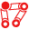

Structure Tools
Warning
Never duplicate nor copy and paste Structures in After Effects, always create new Structures or use the Duplicate button in the Structures panel of Duik.
Internal unique identifiers are associated with the Structures, which won’t be updated when you copy or duplicate the Structures in After Effects. The Auto-rig and other rigging tools in Duik need these identifiers to work correctly and may fail if they are not set properly. The Duplicate tool does this.
 Toggle Edit Mode
Hint
Toggle edit mode (Normal and Expert mode) disables the parenting of all the children of the selected Structure element to be able to move it without affecting the other elements.
- Select some Structure elements
- Click the Toggle edit mode button
- You can now edit the Structure elements, moving, rotating and scaling them as you wish
- Once you have moved the Structure as you wish, do not forget to click the Toggle edit mode button again (with the elements selected) to re-parent the children.
 Select Structures
Select Structures
Click the Select structures button to select all the Structures in the composition.
 Duplicate Structures
Duplicate Structures
Click the Duplicate structures button to duplicate them. On the contrary of the duplicate function of After Effects, the resulting Structure will be correctly parented, and the layers will be grouped together in the stack.
Note
When using this tool to duplicate Structures, Duik will adjust some internal stuff to make sure the Autorig can differentiate the duplicated one from the original one.
Warning
You should always use this button to duplicate Structures, and not duplicate with After Effects ([Ctrl+D]), or else the Auto-rig will consider the duplicated structure to be the same as the original one and will do weird stuff with them…
 Show/Hide Structures
Show/Hide Structures
Shows or hides all (or selected) Structures found in the composition.
If there is no layer selected, this will show of hide all Structures in the composition, or else it will use the layer selection.
 Edit Structures
Edit Structures
Hint
Available in Standard and Expert modes only.
Hint
In the edition panel, you can adjust the appearance of the Structures (Normal and Expert mode).
All changes made in this panel will affect all selected Structures and the creation of all other Structures.
- You can change the size of the Structures, either automatically, relatively to the size of the composition (small, medium and large options), or with an absolute value (custom option).
- You can change the color of the Structures: if you click on the colored label, a color picker will be shown, but you can also set your on hexadecimal color code in the text field. A random button will set a random color.
Hint
The color parameter is ignored when you create predefined limbs (arm, leg, etc.), but you can always change the color afterwards.
- You can pick the selected Structure appearance with the Get button, and set the parameters to the selection with the “Set” button.
- The “Bake Appearance” button will remove all expressions used by the Structure to set its appearance. This will improve the performance of the rig, but you will not be able to change the appearance afterwards.
Note
By default, the Auto-Rig automatically bakes the appearance of the Structures.